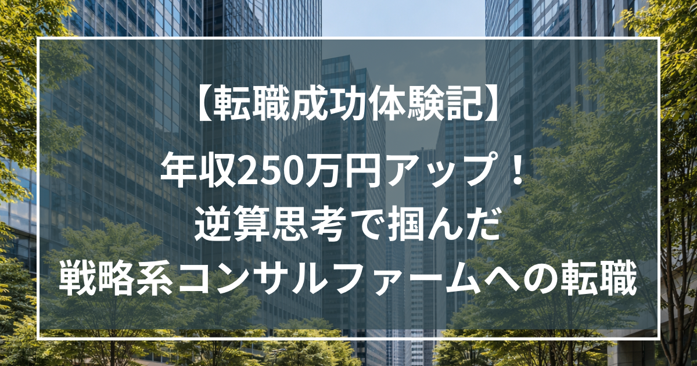

【体験記】年収250万円アップ！逆算思考で掴んだ戦略系コンサルファームへの転職

はじめに（ステラキャリアとの出会い）
私が転職を考えたきっかけは、現職環境の変化でした。これまで、テクノロジーを活用した事業創出や中期経営計画の策定、PMIといった、比較的上流のテーマに関わることができていました。しかし、部門の方針転換により、戦略案件自体が減少しし、徐々に関わる業務の性質も変化していきました。
その中で、「このままの環境では、自分の市場価値は本当に高まるのか」という漠然とした不安を抱くようになりました。そこで転職活動を開始しましたが、当初はうまくいきませんでした。
これまで複数のエージェントを通じて応募したものの、書類が思うように通らず、面接に進むことすらできない状態が続いていました。また、ケース面接対策についても独学で進めていたものの、正直なところ、独りよがりな対策になっている感覚で、手応えは薄く、何が足りないのかも分からない状況でした。結果として、一度転職活動自体を停止することになります。
そうした中で偶然YouTubeで見かけたことがきっかけとなり、ステラキャリアズと村木さんを知りました。初回の面談で印象的だったのは、求人の話ではなく、「どのようにキャリアを設計すれば市場価値を最大化できるか」を起点に議論が進んだことです。ここで初めて、自分の転職活動が場当たり的であり、戦略的に設計されていなかったことに気づきました。同時に、単なるエージェントではなく、キャリア全体に伴走してくれる存在だと感じ、支援をお願いすることを決めました。
サポートの核心
候補者に徹底的に寄り添う姿勢最も価値を感じたのは、キャリアの言語化に対する徹底したサポートです。当初の私は「戦略をやりたい」や「年収を上げたい」といった曖昧な動機しか整理できていませんでした。
村木さんとのとの対話を通じて、
・なぜ戦略領域なのか
・自分はどのような価値を提供できるのか
・中長期的にどのような市場価値を築くべきか
その観点から深く掘り下げられ、思考が整理されました。
特に印象に残ったのは、今他社への転職が本当にプラスになるかという観点で、現職に残りながら準備するという選択肢を提示したことです。短期的な転職支援ではなく、中長期の市場価値を前提に意思決定を支援した点に、強い信頼を感じました。単なるアドバイスではなく、常に候補者の視点で問いを投げかけられることで、自分自身の意思決定軸を明確に言語化することができました。
選考対策
選考対策は、私の業務都合により短期間でしたが、評価ポイントから逆算した対策により、効率的に改善できた実感がありました。
・書類添削：3回以上
・模擬面接：面接前はほぼ毎日（1回あたり約1時間）
・ケース対策：週4時間 × 約3週間（合計12時間）
特に印象に残ったのは、すべてが逆算で設計されていたことです。単なる対策ではなく、「どのように評価されるか」から逆算し、改善を重ねていきました。
その結果、
・書類通過が安定
・一次面接合格率：約60%
と明確に改善しました
独自の情報サイトとコミュニティ
オンラインサロンの存在も大きな価値でした。同じ目標を持つ候補者の回答を聞く中で、自分の立ち位置や課題を客観的に把握することができました。また、トップファーム出身者の知見に基づくリアルな情報に触れることで、選考対策の精度をさらに高めることができました。
成果と決断
結果として、内定を獲得し、戦略系コンサルファームへの転職を決意いたしました。
・年収：600万円 → 850万円（+250万円）
意思決定においては、
・短期（報酬）
・中期（スキル）
・長期（キャリアオプション）
という観点から整理し、納得のいく選択ができました。
最後に
今回の転職活動を通じて、自分一人ではここまでの思考整理や意思決定ができなかったと感じています。特に、言語化と逆算によるキャリア設計は、プロフェッショナルな伴走があって初めて実現できたものでした。
これから転職を考える方に伝えたいのは、単に内定をするのではなく、長い人生を生きる上で「どのように市場価値を高めるか」を起点に考えることの重要性です。
村木さんは、単なるエージェントではなく、人生の転機を支えてくれたプロフェッショナルな伴走者でした。この場を借りて、心より感謝申し上げます。
Go back to Insight